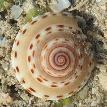
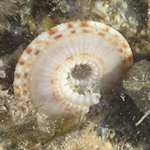
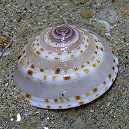
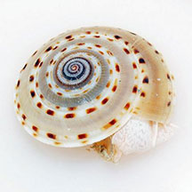
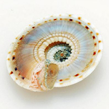
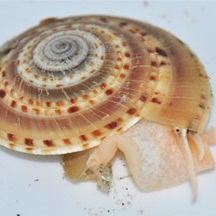

Patridge
sundial snail
Architectonica perdix
Family
Architectonicidae
updated
Sep 2020
Where seen? Sometimes seen on sandy areas near seagrasses on some of our shores.
Features: 6-8cm in diameter. Shell thick and coils to fom a disc with a
flat base. Shell pattern of spirals of brown bars on a paler background. Body and fat tentacles are plain (not striped). Operculum thin, flat and made
of a horn-like material.
What does it eat? It is said to
eat burrowing sea anemones and sea pens. The mouth region is lined
with a tough cuticle as a protection against stings of their prey. |

Dead specimen.
Terumbu Pempang Tengah, Apr 17
|

Underside.
Terumbu Pempang Tengah, Apr 17
|
|
| Partridge sundial snails on Singapore shores |
| Other sightings on Singapore shores |

East Coast Park, Jul 20
Photo shared by Richard Kuah on facebook. |
|
|

Terumbu Pempang Tengah, Apr 13
Photo shared by Loh Kok Sheng on flickr. |

Terumbu Pempang Tengah, Apr 13
Photo shared by Loh Kok Sheng on flickr. |

Photo shared by Toh Chay Hoon on facebook.
Chek Jawa, Mar 13 |
Links
- Family
Architectonicidae on The Gladys Archerd Shell Collection at
Washington State University Tri-Cities Natural History Museum
website: brief fact sheet with photos.
- Architectonica
perdix in SeaLife Base: Technical fact sheet.
References
- Neo Mei Lin. 29 Sep 2017. Possible mating and spawning behaviour of partridge sundial snails. Singapore Biodiversity Records 2017: 121-122.
- Tan Siong Kiat & Chan Sow-Yan. 31 Aug 2017. Recent sightings of two species of sundial shells at eastern Singapore. Singapore Biodiversity Records 2017: 116-118.
- Tan
Siong Kiat and Henrietta P. M. Woo, 2010 Preliminary
Checklist of The Molluscs of Singapore (pdf), Raffles
Museum of Biodiversity Research, National University of Singapore.
- Abbott,
R. Tucker, 1991. Seashells
of South East Asia
 .
Graham Brash, Singapore. 145 pp. .
Graham Brash, Singapore. 145 pp.
- Gosliner,
Terrence M., David W. Behrens and Gary C. Williams. 1996. Coral
Reef Animals of the Indo-Pacific: Animal life from Africa to Hawaii
exclusive of the vertebrates
Sea Challengers. 314pp.
|
|
|